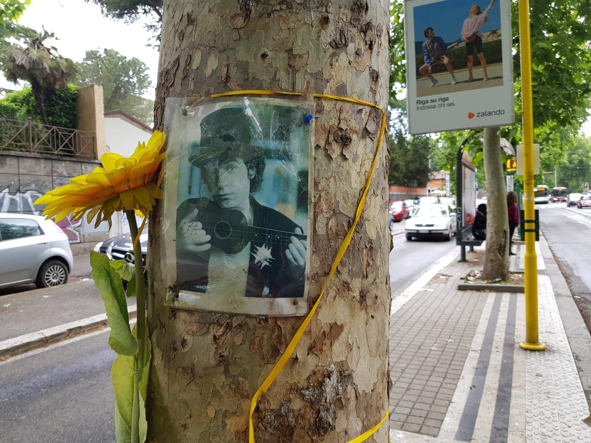

Intorno alla morte di Rino Gaetano, avvenuta a Roma il 2 giugno 1981, negli anni si sono diffuse teorie e leggende, tra cui quella secondo cui Gaetano fu rifiutato da diversi ospedali.
All'apice della sua carriera, il cantautore calabrese, dopo aver passato una notte in compagnia di amici per Roma, venne stroncato da un incidente mentre percorreva via Nomentana, dove abitava coi genitori e la sorella Anna. Forse per un malore o un colpo di sonno la sua macchina invase la corsia opposta e un camion la colpì in pieno.
Venne trasferito al Policlinico ma era già in coma. Urgeva un intervento in un reparto di traumatologia cranica, che il Policlinico non aveva. Si fecero diversi tentativi con molti altri ospedali nel corso della notte e solo alle prime luci dell'alba il cantautore venne ricoverato al Gemelli, dove morì intorno alle 6 del mattino.
Ne La ballata di Renzo, scritta dieci anni prima e rimasta inedita, il cantante sembra predire la sua morte.
Ne La ballata di Renzo , canzone scritta da Gaetano dieci anni prima della sua morte, si racconta la storia di un ragazzo che muore in circostanze davvero molto simili a quelle del cantautore:
«La strada era buia, s'andò al S. Camillo
e lì non l'accettarono forse per l'orario,
si pregò tutti i santi ma s'andò al S. Giovanni
e lì non lo vollero per lo sciopero.»
Renzo, il protagonista della canzone, viene investito da un'auto e muore per le mancate cure perché rifiutato dagli ospedali di Roma per mancanza di posti. Fatalità, nella ballata sono citati tre degli ospedali che rifiutarono il cantautore nella notte del 2 giugno 1981 per mancanza di letti: il Policlinico, il San Giovanni e il San Camillo.
A parlarne durante un’intervista è stata la sorella Anna: “non è vero che Rino fu rifiutato dagli ospedali. Questa è una leggenda. Quando il corpo di mio fratello fu estratto dalle lamiere, venne portato al Policlinico Umberto I, semplicemente perché era il posto più vicino. La struttura non aveva una sala operatoria attrezzata per la craniolesi, ma non l’avevano neppure gli altri ospedali contattati telefonicamente”.
Sta di fatto che, a quarant’anni dalla morte del cantante, c’è chi ipotizza che dietro la sua morte ci sia lo zampino dei servizi segreti. Si tratta dell’avvocato penalista campano Bruno Mautone che ha pubblicato tre libri sulla sua morte.
Mautone, infatti, nei suoi libri ha scritto di essere in possesso di prove inconfutabili che collegherebbero la morte di Rino ai servizi segreti. Non solo, l’avvocato penalista ha anche detto che tanti amici di Rino Gaetano erano agenti segreti, collegati alla Cia americana e ai servizi segreti italiani in quanto l’artista era affiliato alla massoneria ed era “depositario di informazioni riservatissime e frequentatore di ambienti politici”. Sarà davvero così?

 A parlarne durante un’intervista è stata la sorella Anna: “non è vero che Rino fu rifiutato dagli ospedali. Questa è una leggenda. Quando il corpo di mio fratello fu estratto dalle lamiere, venne portato al Policlinico Umberto I, semplicemente perché era il posto più vicino. La struttura non aveva una sala operatoria attrezzata per la craniolesi, ma non l’avevano neppure gli altri ospedali contattati telefonicamente”.
A parlarne durante un’intervista è stata la sorella Anna: “non è vero che Rino fu rifiutato dagli ospedali. Questa è una leggenda. Quando il corpo di mio fratello fu estratto dalle lamiere, venne portato al Policlinico Umberto I, semplicemente perché era il posto più vicino. La struttura non aveva una sala operatoria attrezzata per la craniolesi, ma non l’avevano neppure gli altri ospedali contattati telefonicamente”.